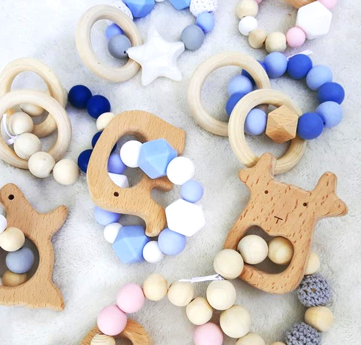
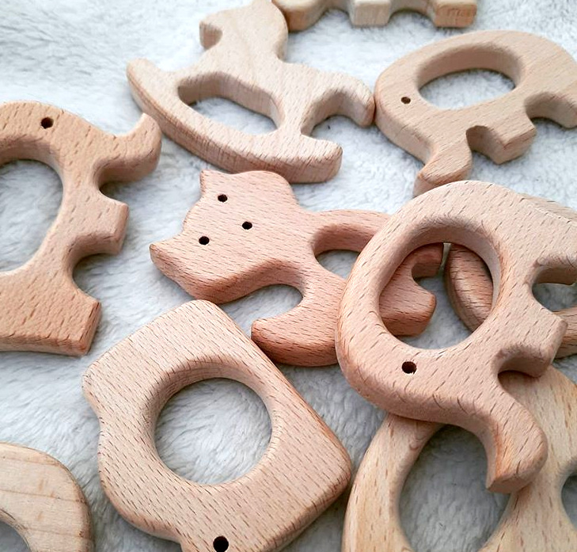
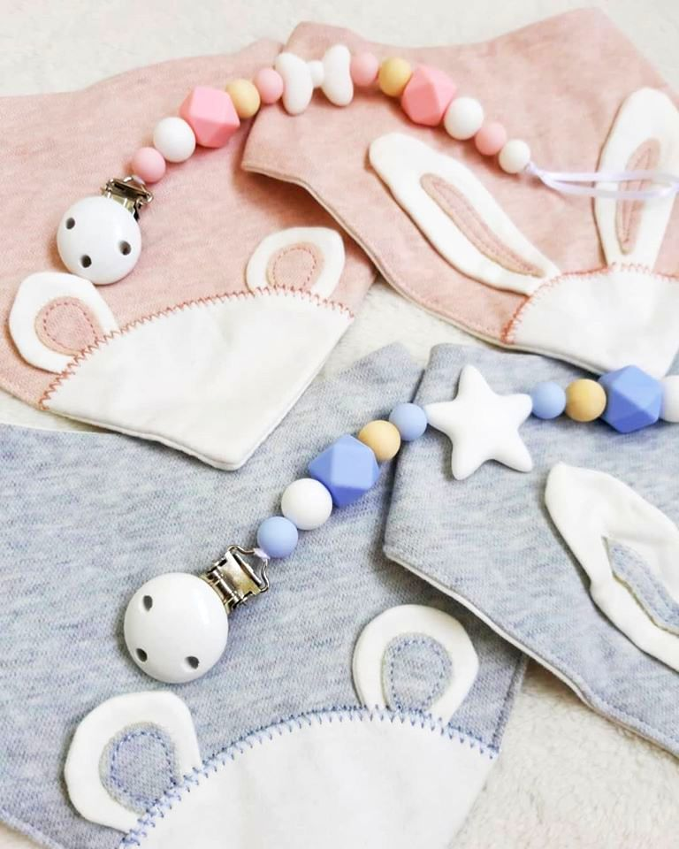

Sākums
Produkti
Graužamriņķi
Knupja turamie
Komplekti
Par Mums
Kontakti

Koka/silikona graužamriņķi
Lielisks palīgs mazuļiem laikā,
kad nāk zobiņi.
Viegli satvert un nogaršot.
Bumbiņas ir veidotas no pārtikas silikona. Drošas bērniem, ir maigas un patīkamas mazajām smaganām.

Komplekti
Sakomplektē pats!
Lieliska dāvana dodoties raudzībās
+ Knupja turamais + Lacīte (regulējams platums) + Graužamriņķis (diamets - 7cm)

Knupja turamie
* 100% dabīgas koka bumbiņas
* silikona bumbiņas (nekaitīgs pārtikas silikons)
* garums aptuveni: 19 - 23 cm